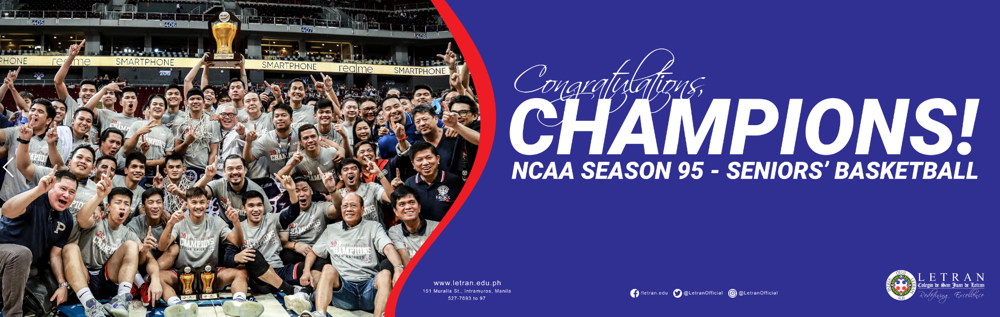
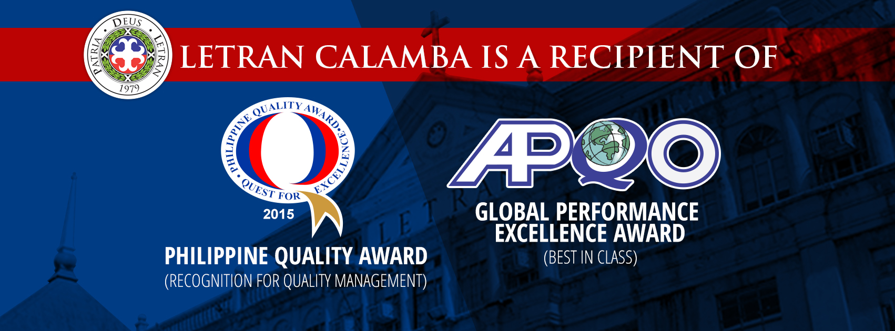

News
Letran Basketball , Nov 19 ,2019
THE CROWN IS BACK TO THE WALLS!
COLEGIO DE SAN JUAN DE LETRAN KNIGHTS ARE YOUR NCAA SEASON 95 MEN’S BASKETBALL CHAMPIONS!
They won against the fierce San Beda Red Lions with a score of 79 to 81, Kudos Red Lions for an amazing season!
What a great way to celebrate our 399th Founding Anniversary. See you next year as we host the NCAA Season 96!
Award for Excilence
Letran Calamba, Nov 21, 2016
Colegio de San Juan de Letran Calamba, a Catholic Dominican institution located in Calamba City, Laguna, is recognized as an exemplary educational institution of world class quality performance. It won Best in Class in the 2016 Global Performance Excellence Award (GPEA) and is a recipient of the Philippine Quality Award (PQA) Recognition for Commitment to Quality Management for the PA 18th Award Cycle.